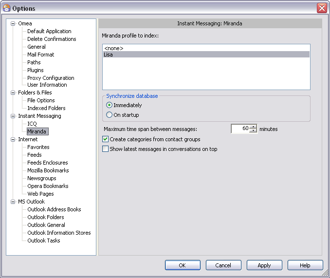

Miranda
You can access this option from the Main menu: Tools | Options: Instant Messaging: Miranda
This page contains options that control how Omea works with the Miranda instant messaging program. Note that the Miranda plugin must be installed and enabled.

Miranda options in the Options Dialog
Miranda Profile to Index
This list shows the Miranda profiles on your computer and enables you to choose one or more (or none) to include in the index.
- Click on a profile to select it for inclusion in the index
- Shift + click on profile names to select more than one profile (if more than one is present)
- Click <none> to exclude all profiles from the index.
Synchronize Database
This group provides options for controlling when Omea indexes incoming and outgoing Miranda messages.
Immediately
All messages are indexed immediately when sent or received. Depending on the volume of traffic you might notice a slight, momentary performance slowdown as indexing takes place. However, the messages are immediately searchable and can be linked (to a Task, for example).
On Startup
Miranda messages are not indexed until the next time you start Omea. You will not be able to search or link new messages during the current session.
Maximum Time Span Between Messages
Specifies the maximum time lapse between messages in the same conversation. Messages that occur after the specified interval are treated as belonging to a different conversation. Set the maximum time interval in the Minutes box.
Create Categories From Contact Groups
When checked, Omea will create Categories from Miranda Contact Groups.
Show Latest Messages in Conversations on Top
When checked, the most recent messages will be displayed on the top of the Preview pane when the conversation is selected in the Items List).
See also: